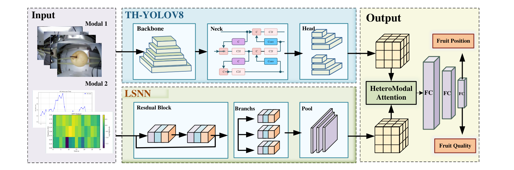
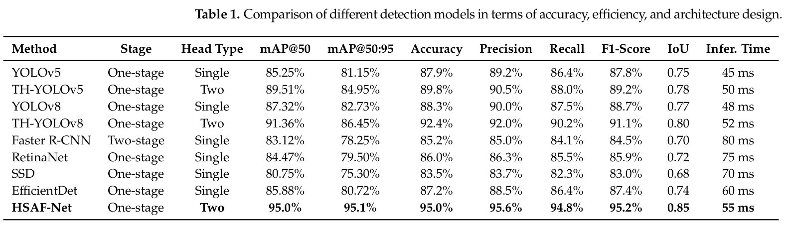
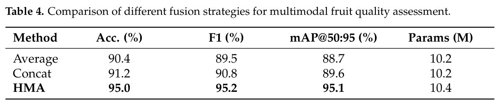

Paper brief
Heterogeneous SNN-ANN Multimodal Fusion Framework for Comprehensive Fruit Quality Assessment
Electronics, 15(16) · 3613
An SNN reads NIR photovoltage sequences, an ANN detects surface defects, and heterogeneous modality attention combines internal and external evidence for nondestructive pear grading.
Research question
RGB appearance alone cannot establish sweetness or internal damage. Photovoltage sequences and images also require different representations, making static fusion restrictive.
Method
HSAF-Net uses LSNN for internal sequence features and two-head TH-YOLOv8 for global appearance and local defects. HMA aligns heterogeneous features and combines intra-modal attention, bidirectional cross-modal interaction, and sample-wise gating.
Technical route
- Synchronized sensing
Acquire aligned NIR photovoltage sequences and multi-view RGB images of each pear.
- LSNN + TH-YOLOv8
Extract internal quality cues, global appearance, and local defect features.
- HMA
Align sparse temporal and dense visual features for sample-wise fusion.
- Edge grading
Run grading and detection on the Ascend Atlas 200DK A2 platform.
Evidence
- Evaluation samples
- 616 pear samples
Controlled crisp-pear acquisition; cross-variety and cross-season validation remains necessary.
- Overall accuracy
- 95.2%
Table 1; fusion ablation Table 4 separately reports 95.0%, retained under its own protocol.
- Edge inference
- 55 ms / sample
Reported single-sample latency on Ascend Atlas 200DK A2.


HSAF-Net Multimodal Framework
Original Figure 1: TH-YOLOv8 external detection, LSNN internal sensing, and HMA fusion.
Preserve modality-specific encoders and learn complementary internal and external evidence.
Source: Electronics, 15(16), 3613 (2026). © 2026 the authors. CC BY 4.0.
View full-size figure

Full-System Performance
Original Table 1 compares classification, detection metrics, and inference time.
The full-system comparison reports 95.2% accuracy and 55 ms inference latency.
Source: Electronics, 15(16), 3613 (2026). © 2026 the authors. CC BY 4.0.
View full-size figure

Fusion Strategy Ablation
Original Table 4 compares averaging, concatenation, and HMA.
HMA reports 95.0% accuracy versus 90.4% for averaging and 91.2% for concatenation.
Source: Electronics, 15(16), 3613 (2026). © 2026 the authors. CC BY 4.0.
View full-size figureTakeaway & limitations
Internal photovoltage responses and RGB appearance provide complementary evidence; modality-specific encoders and adaptive fusion improve pear assessment under controlled conditions.
The work extends neuromorphic temporal modeling to agricultural sensing and connects internal assessment, defect localization, and edge inference in one inspection pipeline.
- Pairs temporal sensing and dense image inputs with SNN and ANN encoders.
- Combines two-head defect detection with heterogeneous modality attention.
- Evaluates a sensing prototype on 616 pears and reports edge inference latency.
Start with the two branches in Figure 1, then distinguish the full-system comparison in Table 1 from the fusion ablation in Table 4. They report 95.2% and 95.0% accuracy, respectively. Table 3 energy values are theoretical estimates. Evidence is limited to controlled pear data, with broader variety and seasonal validation still needed.
Citation
Weibin Tang, Qi Sun, Yunfan Guo, and Zhen Cao. Heterogeneous SNN-ANN Multimodal Fusion Framework for Comprehensive Fruit Quality Assessment. Electronics, 2026, 3613.
Download BibTeX